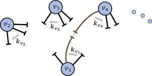

社区发现-Fast Unfolding算法
在社交网络中，有些用户之间联系较为紧密，而另外一些用户之间的关系则较为稀疏。在网络中，我们可以将联系较为紧密的部分用户看成一个社区，在这个社区内部，用户之间联系紧密，而在两个社区之间，联系较为稀疏。
社区划分的评价标准
利用算法将整个网络划分成多个社区之后，需要一个评价指标来衡量这个划分结果的好坏。fast unfolding算法采用的是模块度（Modularity）Q值来衡量。
模块度可以定义为：社区内部的总边数和网络中总边数的比例减去一个期望值，该期望值是将网络设定为随机网络时同样的社区分配所形成的社区内部的总边数和网络中总边数的比例的大小。 \[ Q = \frac{1}{2m}\sum_{vw}\left[A_{vw}-\frac{k_v k_w}{2m}\right]\delta(c_v,c_w) \]
其中，\(A_{vw}\)为网络中邻接矩阵中的一个元素：
\[ A_{vw}= \begin{cases} 1& 点v和w是相连的\\\\ 0& 其它 \end{cases} \]
社区内部的边数和网络的总边数的比例：
\(m\)为整个网络中的边数 \[ m=\frac{1}{2}\sum_{vw}A_{vw} \]
\(c_v\)表示点\(v\)所属的社区，当\(i\),\(j\)存在于同一个社区中时，\(\delta(i,j) = 1\)，否则为0。
于是，社区内部的边数和网络的总边数的比例为： \[ \frac{\sum_{vw}A_{vw}\delta(c_v,c_w)}{\sum_{vw}A_{vw}} = \frac{1}{2m}\sum_{vw}A_{vw}\delta(c_v,c_w) \]
随机网络的总边数和网络中总边数的比例：
定义\(k_v\)表示点\(v\)的度，即 \[ k_v = \sum_w A_{vw} \]
则将网络设定成随机网络，并进行相同的社区分配操作形成的社区内部的总边数和网络中总边数的比例的大小为\(\frac{k_vk_w}{2m}\)。
网络代表所有与原网络有一样的度序列的网络平均。下图说明了如何保持节点的度序列来随机化网络连边。

- 将网络的边都断成两段。度为k的节点有\(k\)个“半边”
- 每条“半边”都随机寻找其他的“半边”配成一个整边
- 容易发现，这样得到的新的网络跟原始的网络有同样的度序列
- 节点\(i\)有\(k_i\)个“半边”，每个半边恰好连接的是节点\(j\)的“半边”的概率为\(\frac{k_j}{2m}\)
- 平均来说，新的网络中，节点i与节点j的期望连边数为\(\frac{k_ik_j}{2m}\)。
模块度变形：
定义\(e_{ij}\)为社区\(i\)与社区\(j\)之间的边数占网络中所有边数的占比，即 \[ e_{ij} = \frac{1}{2m} \sum_{vw}A_{vw}\delta(c_v,i)\delta(c_w,j) \]
定义\(a_i\)为连接到社区\(i\)的边数占网络中所有边数的占比，即
\[ a\_i = \frac{1}{2m} \sum_{v}k_{v}\delta(c_v,i) \]
同时，由于\(\delta(c\_v,c\_w)=\sum\_i\delta(c\_v,i)\delta(c\_w,i)\). 则模块度的计算可以简化为：
\[ \begin{eqnarray\*} Q & = & \frac{1}{2m}\sum_{vw}\left[A_{vw}-\frac{k_v k_w}{2m}\right]\sum\_i\delta(c\_v,i)\delta(c\_w,i) \\\\ & = & \sum\_i \left[\frac{1}{2m}\sum\_{vw}A\_{vw}\delta(c\_v,i)\delta(c\_w,i)-\frac{1}{2m}\sum\_v k\_v\delta(c\_v,i)\frac{1}{2m}\sum\_w k\_w\delta(c\_w,i)\right]\\\\ & = & \sum\_i (e\_{ii}-a\_i^2) \end{eqnarray\*} \]
Fast Unfolding算法
在社区发现问题中，以前的研究人员提出了许多的方法，例如标签传播算法（Label Propagation Algorithm）、Fast Unfolding等。考虑到现有数据的规模和算法的复杂度等因素，本文选用的是fast unfolding。
Fast Unfolding算法的主要目标是不断划分社区使得划分后的整个网络的模块度不断增大。算法主要包括两个过程，过程示例如下。
Modularity Optimization，这一过程主要讲节点与邻近的社区进行合并，使得网络的模块度不断变大。
定义\(\sum\_{in}\)为社区\(C\)内所有边的权重和，\(\sum\_{tot}\)为与社区\(C\)内的点连接的边的权重和，\(k\_i\)为所有连接到节点\(i\)上的边的权重和，\(k\_{i,in}\)为节点\(i\)与社区\(C\)内的节点连接的边的权重和，\(m\)是网络中所有边的权重和。
则将节点\(i\)划分到社区\(C\)中产生的模块度的变化\(\Delta Q\)可用下式计算 \[ \begin{eqnarray\*} \Delta Q & = & \left[\frac{\sum\_{in} + k\_{i,in}}{2m} - \left(\frac{\sum\_{tot}+k\_i}{2m}\right)^2\right]-\left[\frac{\sum\_{in}}{2m} - \left(\frac{\sum\_{tot}}{2m}\right)^2 - \left(\frac{k\_i}{2m}\right)^2\right]\\\\ & = & \frac{k\_{i,in}}{2m} - \frac{k\_i\sum\_{tot}}{2m^2} \end{eqnarray\*} \]
根据上式，我们只需要知道社区中与该节点连接的边的权重之和，以及社区中的点连接的边的权重和就可以计算模块度的变化量。
Commnunity Aggregation这一过程将第一步中的社区汇聚成一个点，重构网络结果。
这一步中，将原来的两个社区之间的边的权重和作为新的节点之间的权重，将社区内的权重和作为新节点上的环向边的权重。
可以看到，做Graph folding的意义在于调整Modularity Optimization的基本单位。这么做的主要原因是
- 基于邻居的Modularity Optimization优化在后期变化非常缓慢，需要通过调整变量的粒度来加速算法的收敛。
- Graph folding还使得算法的视野更远，即每一步Modularity Optimization将涉及到更多的非邻居节点。
fast unfolding算法将重复迭代以上过程，直至网络的结构不变（\(\Delta Q\)小于某个阈值）。
Fast unfolding算法的应用
- 寻找黑浓度较高的社区，判定成黑社区
- 黑浓度较低的社区，判定成灰规则
参考文献
模块度Q——复杂网络社区划分评价标准 Finding community structure in very large networks Fast unfolding of communities in large networks